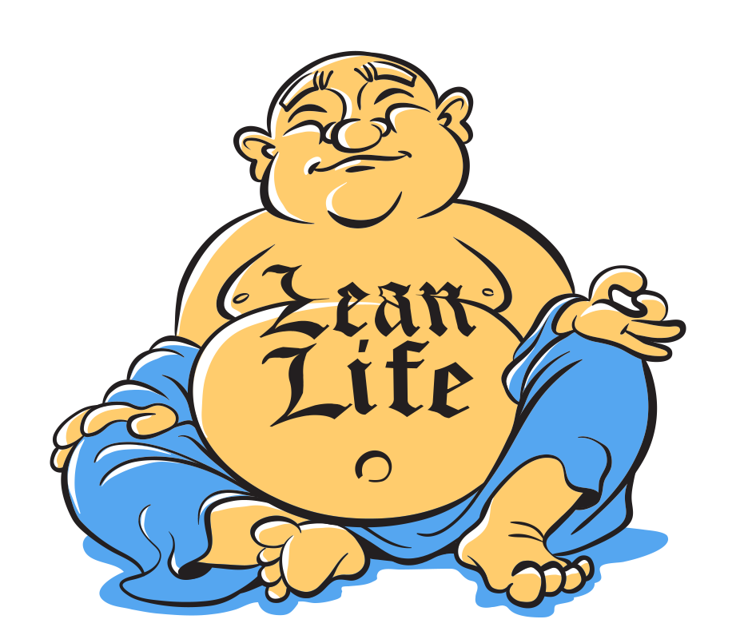

Time and Patience
And did they get you to trade / Your heroes for ghosts? / Hot ashes for trees? / Hot air for a cool breeze? / Cold comfort for change?
And did you exchange / A walk on part in the war / For a lead role in a cage?
Pink Floyd - Wish You Were Here (1975)
Free for so long to be myself, I haven't written anything that sounds like me in years. I shaped my life around the promise of reward in Silicon Valley. We would make the world a better place. Except, at the cost of no longer recognizing myself. Lost are the days that I look after myself, my health, my friends and my family. Career first. But why? *
As a child, I spent days in bed. Accompanied by fevers and painkillers, I viewed life through the lens of chronic illness. Friends went on field trips and I celebrated at home, wishing I could join them. Homework was hard because I couldn't focus. At times I would race ahead of my classmates, turning in chapters of work at a time. Other times, I would lag behind half the year. Exhausted, I slept on the desk in my advanced placement classes.
Regaining my health has been a practice of discipline. I've created countless diet and exercise plans. My body and my health are my first concern, but not always my priority. I pay attention to myself, my surroundings and the people around me. This led me to be a print designer in the nineties. Communication and learning are important because I'm always out-of-step with my peers.
In 2006, I started work in software development in San Francisco. My design work lacked meaning until I found an approach called Lean UX some years later. It borrows from lean manufacturing, where a factory worker can reduce waste by giving feedback to get the parts they need to keep the assembly line moving. In Lean UX, the process is called the "build - measure - learn" cycle. [1] People work collaboratively to understand and solve problems. It made sense to me because I've improved my health with specialists through rigorous experimentation.
More than once in my career, I've found myself in the hospital due to stress. I was scared for my well-being and scared because I didn't feel as confident as others appeared. Initially, I hoped Lean UX would help me collaborate at work as well as I'd learned to collaborate with doctors to recover my health. But changing the workplace is a difficult task and I have not felt successful.
It's taken time and patience for me to notice what work environments don't support my health. Friends, family and certain employers helped me reconnect. A new love and a new home gave me life. People have cared for me while I struggled to find my way. But the journey has been personal and private.
It's awful to suffer in isolation. My work in design is to facilitate conversations and create with others. It literally cannot be done alone. But I've seen a trend in the places where I've worked to be alone. For some, perhaps the most apparent way to survive a hostile workplace is to run and hide. It's a natural instinct, but the workplace is the same environment that supports us to buy food and clothing. It's a conflict that seems to be getting worse.
I'm moving beyond personal suffering to join others to see what we can do to change things. [2,3] Understanding how things are today is a good place to start. The illustration for this article is a criticism of the overabundance I see here in San Francisco and it's a nod to the philosophy that influences lean. [4] My hope is that this philosophy might teach us to look inward and change. **
Inward does not mean isolated. I've had panic attacks that stopped me cold on Market Street. I spent years looking up at skyscrapers, waiting for the pain to pass. I'm tired of being in pain and feeling alone. I want to heal. I'm just getting started, so please join me. [5]
How does this look outside San Francisco? I'm curious. Do you know someone in pain at work? Are they being asked to do more than they feel capable? Are you that person?
As a society, we dictate the terms of how fast we move and in what direction. Just because your new phone can send 100 notifications per second doesn't mean you're obligated to respond. Neither you, nor others, should expect that you work as tirelessly as a machine. You are not a computer. [6] You can take the time to connect. Talk to people around you. Share your hopes and worries. See how people are feeling and what they're doing. Take care of yourself and take care of somebody else. *** ∎
- References
- [1] Lean UX: Applying Lean Principles to Improve User Experience by Jeff Gothelf with Josh Seiden (2013).
- [2] Make Meaningful Work with Josephine Wong and Daniel Szuc (2016).
- [3] Beyond Bridges with John Philpin (2016).
-
[4]
The Lean Startup: How Today's Entrepreneurs Use Continuous Innovation to Create Radically Successful Businesses
by Eric Ries (2011). There is an ensō from Zen Buddhism on the cover of Lean Startup. It's an open circle made with a single brushstroke. The stroke represents spontenaity in movement. It's a symbol that encourages imperfection and embraces incompletion.
- [5] Bonfire School with Louis Rawlins and Jenny Zhou, creating community around health with design (2016).
- [6] You Are Not a Gadget by Jaron Lanier (2010).